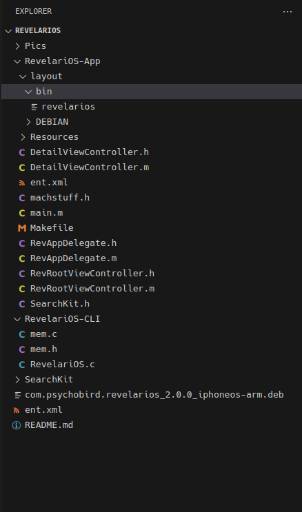
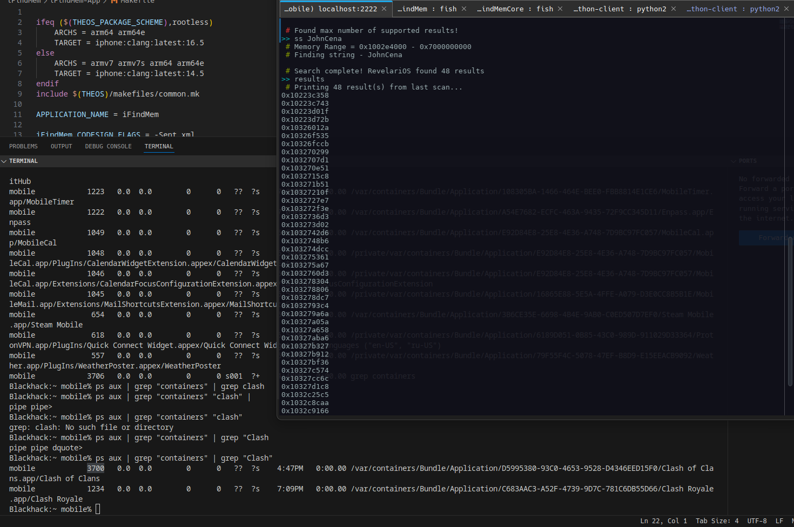
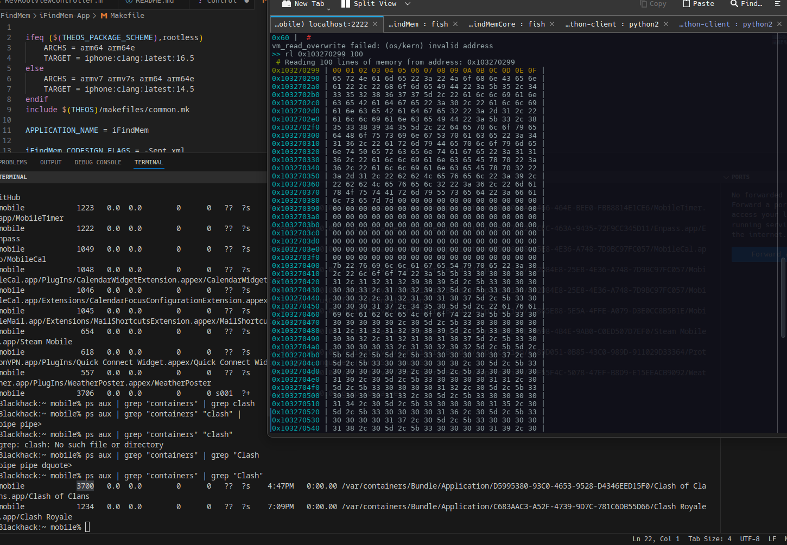

Why did I get into iOS?
To be 100% honest. I have zero clue why I am so into iOS. I think it stims from being a child wanting my phone to do something not many iPhones do. This blog post is going to be not as structured as the others. We are mostly going to talk about the notes I took, what I learned going down this rabbit hole, and how I applied what I learned. Hopefully seeing how someone else goes about business will help yourself.
I’ve never really worked with a project this big before so I had a lot to learn.
Whats the Goal?
The goal was to be able to choose a process and monitor/sparse the memory wtih r/w permissions of protected ipas. There isn’t really a tweak that does this, and the free ones I found were, not using anything useful for bypassing or closed source. I started github diving and found a 5yr old project RevelariOS. I took a look at the code compiled it, and realized “this is not a bad boilerplate to continue with”, and thats where this journey started.
Structure of the orginal project
The orginal project structure is a little weird.

Overall its a iOS application/tool so its going to have the default iOS layout. But whats weird is the binary/tool was pre-compiled and just thrown into the package layout. So you’re not actually compiling and installing the package. I don’t like this. This is where the Theos community comes in (specifically Leptos).
Trying to Compile the binary
This became a nightmare for me. Half of the code was outdated and I’ve never worked with something like this before, so I went searching for people that have haha. within a bit we had some solutions to the issues I had. Screenshots provided below to all of the madness.
Debug Dump:
```==> Compiling iFindMemCore.c (arm64e)… iFindMemCore.c:65:13: error: call to undeclared library function ‘exit’ with type ‘void (int) attribute((noreturn))’; ISO C99 and later do not support implicit function declarations [-Wimplicit-function-declaration] EXIT ^ ./mem.h:22:52: note: expanded from macro ‘EXIT’ #define EXIT printf(ERROR”Exiting iFindMem…“); exit(0); ^ iFindMemCore.c:65:13: note: include the header <stdlib.h> or explicitly provide a declaration for ‘exit’ ./mem.h:22:52: note: expanded from macro ‘EXIT’ #define EXIT printf(ERROR”Exiting iFindMem…“); exit(0); ^ iFindMemCore.c:76:25: error: call to undeclared library function ‘strtol’ with type ‘long (const char , char , int)’; ISO C99 and later do not support implicit function declarations [-Wimplicit-function-declaration] pid = (int) strtol(args[1], NULL, 0); ^ iFindMemCore.c:76:25: note: include the header <stdlib.h> or explicitly provide a declaration for ’strtol’ iFindMemCore.c:113:56: error: incompatible pointer types passing ’vm_address_t ()[256]’ (aka ’unsigned long ()[256]’) to parameter of type ’vm_address_t ’ (aka ’unsigned long ’) [-Werror,-Wincompatible-pointer-types] search_data(task, false, false, base, end, &out, &resultnum, args[1]); ^~~~ ./mem.h:59:41: note: passing argument to parameter ’outaddr’ here vm_address_t outaddr[SEARCH_MAX], ^ iFindMemCore.c:123:55: error: incompatible pointer types passing ’vm_address_t ()[256]’ (aka ’unsigned long ()[256]’) to parameter of type ’vm_address_t ’ (aka ’unsigned long ’) [-Werror,-Wincompatible-pointer-types] search_data(task, false, true, base, end, &out, &resultnum, args[1]); ^~~~ ./mem.h:59:41: note: passing argument to parameter ’outaddr’ here vm_address_t outaddr[SEARCH_MAX], ^ iFindMemCore.c:133:55: error: incompatible pointer types passing ’vm_address_t ()[256]’ (aka ’unsigned long ()[256]’) to parameter of type ’vm_address_t ’ (aka ’unsigned long ’) [-Werror,-Wincompatible-pointer-types] search_data(task, true, false, base, end, &out, &resultnum, args[1]); ^~~~ ./mem.h:59:41: note: passing argument to parameter ’outaddr’ here vm_address_t outaddr[SEARCH_MAX], ^ iFindMemCore.c:143:54: error: incompatible pointer types passing ’vm_address_t ()[256]’ (aka ’unsigned long ()[256]’) to parameter of type ’vm_address_t ’ (aka ’unsigned long ’) [-Werror,-Wincompatible-pointer-types] search_data(task, true, true, base, end, &out, &resultnum, args[1]); ^~~~ ./mem.h:59:41: note: passing argument to parameter ’outaddr’ here vm_address_t outaddr[SEARCH_MAX], ^ iFindMemCore.c:152:37: error: incompatible pointer to integer conversion passing ’vm_address_t[256]’ (aka ’unsigned long[256]’) to parameter of type ’vm_address_t’ (aka ’unsigned long’) [-Werror,-Wint-conversion] write_data(task, false, out, args[1]); ^~~ ./mem.h:50:39: note: passing argument to parameter ’addr’ here vm_address_t addr, ^ iFindMemCore.c:159:36: error: incompatible pointer to integer conversion passing ’vm_address_t[256]’ (aka ’unsigned long[256]’) to parameter of type ’vm_address_t’ (aka ’unsigned long’) [-Werror,-Wint-conversion] write_data(task, true, out, args[1]); ^~~ ./mem.h:50:39: note: passing argument to parameter ’addr’ here vm_address_t addr, ^ iFindMemCore.c:12:10: error: unused variable ’in’ [-Werror,-Wunused-variable] char in[MAX_INPUT_DATA]; ^ 9 errors generated. make[4]: [/home/zen/.libs/~/theos/makefiles/instance/rules.mk:309: /home/zen/Documents/gitrepos/jbtweaks/iFindMem/iFindMem-App/.theos/obj/debug/arm64e/iFindMemCore.c.0999093b.o] Error 1 ==> Compiling iFindMemCore.c (arm64)… iFindMemCore.c:65:13: error: call to undeclared library function ’exit’ with type ‘void (int) attribute((noreturn))’; ISO C99 and later do not support implicit function declarations [-Wimplicit-function-declaration] EXIT ^ ./mem.h:22:52: note: expanded from macro ‘EXIT’ #define EXIT printf(ERROR”Exiting iFindMem…“); exit(0); ^ iFindMemCore.c:65:13: note: include the header <stdlib.h> or explicitly provide a declaration for ‘exit’ ./mem.h:22:52: note: expanded from macro ‘EXIT’ #define EXIT printf(ERROR”Exiting iFindMem…“); exit(0); ^ iFindMemCore.c:76:25: error: call to undeclared library function ‘strtol’ with type ‘long (const char , char , int)’; ISO C99 and later do not support implicit function declarations [-Wimplicit-function-declaration] pid = (int) strtol(args[1], NULL, 0); ^ iFindMemCore.c:76:25: note: include the header <stdlib.h> or explicitly provide a declaration for ’strtol’ iFindMemCore.c:113:56: error: incompatible pointer types passing ’vm_address_t ()[256]’ (aka ’unsigned long ()[256]’) to parameter of type ’vm_address_t ’ (aka ’unsigned long ’) [-Werror,-Wincompatible-pointer-types] search_data(task, false, false, base, end, &out, &resultnum, args[1]); ^~~~ ./mem.h:59:41: note: passing argument to parameter ’outaddr’ here vm_address_t outaddr[SEARCH_MAX], ^ iFindMemCore.c:123:55: error: incompatible pointer types passing ’vm_address_t ()[256]’ (aka ’unsigned long ()[256]’) to parameter of type ’vm_address_t ’ (aka ’unsigned long ’) [-Werror,-Wincompatible-pointer-types] search_data(task, false, true, base, end, &out, &resultnum, args[1]); ^~~~ ./mem.h:59:41: note: passing argument to parameter ’outaddr’ here vm_address_t outaddr[SEARCH_MAX], ^ iFindMemCore.c:133:55: error: incompatible pointer types passing ’vm_address_t ()[256]’ (aka ’unsigned long ()[256]’) to parameter of type ’vm_address_t ’ (aka ’unsigned long ’) [-Werror,-Wincompatible-pointer-types] search_data(task, true, false, base, end, &out, &resultnum, args[1]); ^~~~ ./mem.h:59:41: note: passing argument to parameter ’outaddr’ here vm_address_t outaddr[SEARCH_MAX], ^ iFindMemCore.c:143:54: error: incompatible pointer types passing ’vm_address_t ()[256]’ (aka ’unsigned long ()[256]’) to parameter of type ’vm_address_t ’ (aka ’unsigned long ’) [-Werror,-Wincompatible-pointer-types] search_data(task, true, true, base, end, &out, &resultnum, args[1]); ^~~~ ./mem.h:59:41: note: passing argument to parameter ’outaddr’ here vm_address_t outaddr[SEARCH_MAX], ^ iFindMemCore.c:152:37: error: incompatible pointer to integer conversion passing ’vm_address_t[256]’ (aka ’unsigned long[256]’) to parameter of type ’vm_address_t’ (aka ’unsigned long’) [-Werror,-Wint-conversion] write_data(task, false, out, args[1]); ^~~ ./mem.h:50:39: note: passing argument to parameter ’addr’ here vm_address_t addr, ^ iFindMemCore.c:159:36: error: incompatible pointer to integer conversion passing ’vm_address_t[256]’ (aka ’unsigned long[256]’) to parameter of type ’vm_address_t’ (aka ’unsigned long’) [-Werror,-Wint-conversion] write_data(task, true, out, args[1]); ^~~ ./mem.h:50:39: note: passing argument to parameter ’addr’ here vm_address_t addr, ^ iFindMemCore.c:12:10: error: unused variable ’in’ [-Werror,-Wunused-variable] char in[MAX_INPUT_DATA]; ^ 9 errors generated. make[4]: [/home/zen/.libs/~/theos/makefiles/instance/rules.mk:309: /home/zen/Documents/gitrepos/jbtweaks/iFindMem/iFindMem-App/.theos/obj/debug/arm64/iFindMemCore.c.79c9a250.o] Error 1 ==> Compiling mem.c (arm64)… mem.c:66:40: error: format specifies type ’unsigned long’ but the argument has type ‘byte_t’ (aka ‘unsigned char’) [-Werror,-Wformat] printf(”%lx “, readOut[i]); ~~~ ^~~~~~~~~~ %hhx mem.c:115:38: error: call to undeclared library function ‘strtol’ with type ‘long (const char , char , int)’; ISO C99 and later do not support implicit function declarations [-Wimplicit-function-declaration] writebyte[i] = (uint8_t) strtol(tocmpbyte[i], NULL, 16); ^ mem.c:115:38: note: include the header <stdlib.h> or explicitly provide a declaration for ’strtol’ mem.c:118:37: error: incompatible pointer to integer conversion passing ’byte_t ()[strlen(in) / 2]’ (aka ’unsigned char ()[strlen(in) / 2]’) to parameter of type ’vm_offset_t’ (aka ’unsigned long’) [-Werror,-Wint-conversion] kret = vm_write(task, addr, &writebyte, sizeof(writebyte)); ^~~~~~~~~~ /home/zen/.libs/~/theos/sdks/iPhoneOS16.5.sdk/usr/include/mach/vm_map.h:184:14: note: passing argument to parameter ’data’ here vm_offset_t data, ^ mem.c:127:37: error: incompatible pointer to integer conversion passing ’byte_t ()[strlen(in)]’ (aka ’unsigned char ()[strlen(in)]’) to parameter of type ’vm_offset_t’ (aka ’unsigned long’) [-Werror,-Wint-conversion] kret = vm_write(task, addr, &writebyte, sizeof(writebyte)); ^~~~~~~~~~ /home/zen/.libs/~/theos/sdks/iPhoneOS16.5.sdk/usr/include/mach/vm_map.h:184:14: note: passing argument to parameter ’data’ here vm_offset_t data, ^ mem.c:98:12: error: unused variable ’bytes’ [-Werror,-Wunused-variable] size_t bytes = strlen(in); ^ mem.c:194:38: error: incompatible integer to pointer conversion assigning to ’vm_address_t ’ (aka ’unsigned long ’) from ’unsigned long’ [-Werror,-Wint-conversion] outaddr = baseaddr+i; ^ ~~~~~~~~~~ mem.c:199:53: error: incompatible integer to pointer conversion assigning to ’vm_address_t ’ (aka ’unsigned long ’) from ’unsigned long’ [-Werror,-Wint-conversion] (outaddr + foundtotal) = baseaddr+i; ^ ~~~~~~~~~~ 7 errors generated. make[4]: [/home/zen/.libs/~/theos/makefiles/instance/rules.mk:309: /home/zen/Documents/gitrepos/jbtweaks/iFindMem/iFindMem-App/.theos/obj/debug/arm64/mem.c.79c9a250.o] Error 1 ==> Compiling mem.c (arm64e)… mem.c:66:40: error: format specifies type ’unsigned long’ but the argument has type ‘byte_t’ (aka ‘unsigned char’) [-Werror,-Wformat] printf(”%lx “, readOut[i]); ~~~ ^~~~~~~~~~ %hhx mem.c:115:38: error: call to undeclared library function ‘strtol’ with type ’long (const char *, char **, int)‘; ISO C99 and later do not support implicit function declarations [-Wimplicit-function-declaration] writebyte[i] = (uint8_t) strtol(tocmpbyte[i], NULL, 16); ^ mem.c:115:38: note: include the header <stdlib.h> or explicitly provide a declaration for ’strtol’ mem.c:118:37: error: incompatible pointer to integer conversion passing ‘byte_t ()[strlen(in) / 2]’ (aka ’unsigned char ()[strlen(in) / 2]’) to parameter of type ‘vm_offset_t’ (aka ‘unsigned long’) [-Werror,-Wint-conversion] kret = vm_write(task, addr, &writebyte, sizeof(writebyte)); ^~~~~~~~~~ /home/zen/.libs/~/theos/sdks/iPhoneOS16.5.sdk/usr/include/mach/vm_map.h:184:14: note: passing argument to parameter ‘data’ here vm_offset_t data, ^ mem.c:127:37: error: incompatible pointer to integer conversion passing ‘byte_t ()[strlen(in)]’ (aka ’unsigned char ()[strlen(in)]’) to parameter of type ‘vm_offset_t’ (aka ‘unsigned long’) [-Werror,-Wint-conversion] kret = vm_write(task, addr, &writebyte, sizeof(writebyte)); ^~~~~~~~~~ /home/zen/.libs/~/theos/sdks/iPhoneOS16.5.sdk/usr/include/mach/vm_map.h:184:14: note: passing argument to parameter ‘data’ here vm_offset_t data, ^ mem.c:98:12: error: unused variable ‘bytes’ [-Werror,-Wunused-variable] size_t bytes = strlen(in); ^ mem.c:194:38: error: incompatible integer to pointer conversion assigning to ‘vm_address_t ’ (aka ’unsigned long ’) from ‘unsigned long’ [-Werror,-Wint-conversion] outaddr = baseaddr+i; ^ ~~~~~~~~~~ mem.c:199:53: error: incompatible integer to pointer conversion assigning to ‘vm_address_t ’ (aka ’unsigned long ’) from ‘unsigned long’ [-Werror,-Wint-conversion] (outaddr + foundtotal) = baseaddr+i;
Yeah So This was a mess…
Resolving the Garbage Pile mess
After 3 people (Mostly the Theos community) resloving this hot pile. We finally got a working build.
 
Okay cool, a tool that… kinda works
The frontend application is null void. It will boot but preform zero tasks. The cli however does work, kinda. There is no proper tty to remember commands
The cli is really slow. Also have no way to fetch pids from within it, and doing that with
ps aux | grep containers | grep my ass | awk someone elses ass {FS = ” “;}{pid = $2;cid = $7; path = substr($11, index($11,
yeah Im not doing that. I first wrote a shell script but… that wasn’t enough for me either. So I create another theos package iProcDump to nicely list all of processess with KERN_PROC, nicely sparsing it listing PIDS and Process name. I whipped it up pretty quickly being warmed up from the iFindMem. At some point it would be added to the main application.
Conclusion
There is a lot to be done as I would like to see some sort of decompiler like rizin or ghidra, being able to be used directly. After running iFindMem and find interesting memory addresses, you can start messing with them in a debugger/decompiler right away.
I at some point have to go back to pwn related stuff, and especially revist assembly to get more into iOS Exploit/Jailbreak Development. I will make a few update posts for huge new releases regarding these topics,